| 更新时间 | 更新内容 |
|---|---|
| 2017-03-26 | 发布 |
扩展阅读：A successful Git branching model
git基本工作流及rebase介绍最原始的单分支工作流开发分支与发布分支的分离多人协作下的开发分支分离基于需求拆分分支的需要及规范发布准备分支的分离线上版本问题紧急修复Fork & Pull Request式工作流关于merge产生的commit使用rebase可以解决的问题rebase带来的问题在SourceTree中进行rebase使用squash合并多个commit在SourceTree中进行squash总结和广告时间
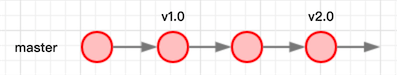
这是在单人单版本线状况下，最简单的工作流了：所有的代码在一个master分支上提交，需要发布的时候直接在master分支发布新版本。
每一种工作流的进化，都是为了解决一个实际工作中会遇到的问题。我们首先会遇到的问题就是：
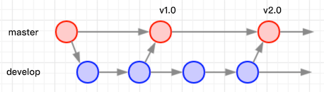
在此需求下，进化出了develop分支：开发时所有的代码在develop分支提交，在功能稳定需要发布的时候向master进行一次合并并发布，保证master始终是最后一次发布的稳定的代码。
现在项目组人员增加了，所有人在同一个develop分支提交代码的结果就是：
当然其实git是能解决这个问题的，因为commit是产生在本地的，你可以选择一直不push代码，在完成完整功能之后再进行push操作并进行冲突处理。
但是要记住代码不存一份副本是风险很高的，就算你自己硬盘没有坏过应该也听说过被硬盘损坏所支配的恐惧。越大的功能存在的风险就越高，一个月才能做完的功能临做完准备push的时候电脑坏了，那画面太美不敢想。
git的伟大之处就在于多处同步，无论服务器和研发人员的电脑坏了几个，只要还有一个完好的副本，就能随时满血复活。
有点扯远了，那么为了解决上述单develop分支的弊端，建立新的方案：
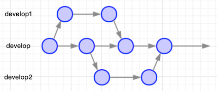
每个人基于develop分支开出自己使用的develop分支副本，在此分支上进行开发工作，自行选择合适的时机处理冲突合回主干develop。这样的方案，一定程度可以解决多人协作的问题。
随着需求数量的增多，以及单个需求规模和复杂度的增大，上述多develop分支方案也面临着新的挑战：
相信大家也或多或少的遇到过这样的问题，那么在这种情况下我们的每个分支最好只包含一个单独的功能需求：
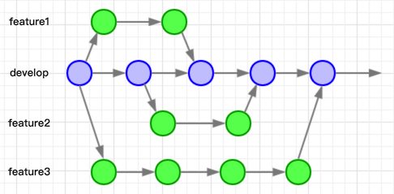
如上图所示，每一个feature分支代表一个单独的功能需求，这样的方案带来的优势：
上述各种方案最终都是依赖develop分支来生成总包进行QA验证，最后发布版本的。在这种情况下，发布期间就必须锁定develop分支，只能push修复总包问题的提交，之外的提交均不可以push。这就带来了问题：
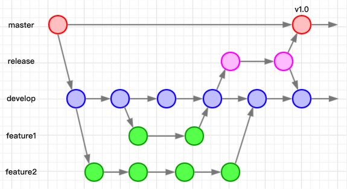
在这种情况下就诞生了全新的release分支：在需要发布的功能需求都已经合入develop之后，从develop分支开出独立的release分支，进行QA、问题修复并持续构建总包做好发布前的准备工作。这样做带来的优势：
现在线上版本出了重大问题，需要紧急修复之后发布一个新的版本！develop分支带了一些别的提交，可能是不稳定的，显然并不适合用develop去发布一个新的版本。这时候大家可以回想下当初把master和develop分离的初衷了，master分支到了出马的时候。
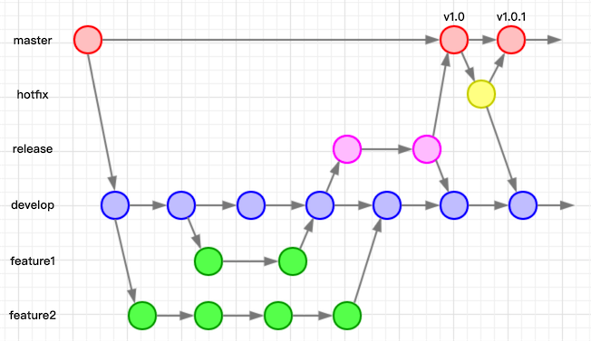
我们其实可以在master分支直接提交修复。但是这会有些问题：
所以这里诞生了hotfix分支，我们从master开出hotfix分支，进行QA验证后重新再发一个紧急修复版本，然后将hotfix分支合并回master和develop主干。
当然方案并不是唯一的，在不违反规范且上一个release分支能被找到的情况下，这样也没什么问题：
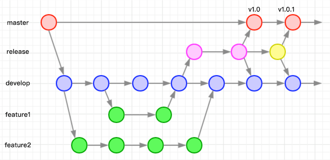
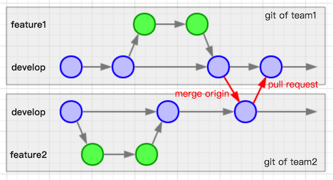
一图流……每个团队都有一个git副本，每个团队的git副本按照自己的工作流习惯来进行工作。在需要进行合并的时候，其他团队merge主团队的代码。在需要向主团队提交代码时，提出对应的pull request。这个暂不多述。
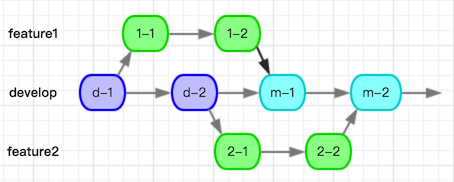
如图所示，d-1表示在develop分支进行的第一个commit，2-1表示在feature2分支进行的第一个commit，m-1表示第一次用merge方式合并代码产生的合并commit。这个图示的方式在后面会用到。
在常规工作中，我们是更建议使用merge方式来合并代码的，merge方式每一次合并会产生一个新的commit（需要禁用Fast Forward）并能忠实的反映每一个分支的合并历史。
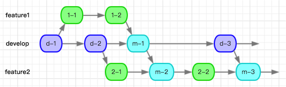
如图所示，大家可以看到merge模式带来的困扰：
这种时候就可以用到rebase方式进行代码合并了。rebase操作的结果如下图所示：
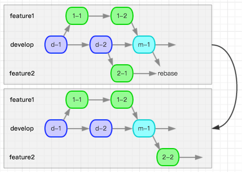
可以看到feature2分支直接变成了基于m-1位置开出的分支，这也是rebase这个词的含义的直接体现。如果后续继续进行rebase操作，还可以得到结果：
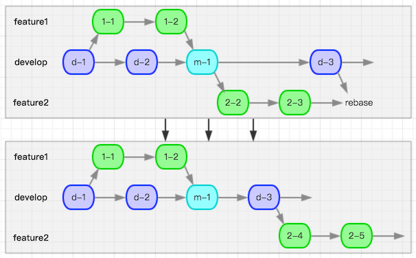
这样分支结构就会变得清晰无比，而对应分支的commit连贯性也变得十分的强。
但是不知大家是否注意到一点，2-1对应的commit在rebase之后变成了2-2，2-2和2-3对应的commit在rebase之后又变成了2-4和2-5。是的，其实rebase之后会得到全新的commit，feature2分支也会变成一个全新的分支。如果这个时候你已经将feature2分支push到过远程服务器，那么你本地的分支和远程的分支势必是冲突的，只能通过git push --force指令来将本地的分支强行覆盖至服务器上的对应分支。如果服务器上的对应分支被别人pull过，那么恭喜你们，你们将遇到各种蛋疼和诡异的合并问题。
feature2分支每次rebase完之后得到新的commit，看上去也会变成从新的位置开出的分支。这种模式和merge相比较的问题就是，无法真实的反映出feature2分支究竟是从哪开出来的。所以各分支合并回develop主干的时候，一定要使用merge方式，保留一个merge commit来用以识别合入操作的时间点。
在merge的时候遇到冲突，对应的merge commit里会列出冲突的文件，以供之后回朔历史的时候找到问题。而rebase的时候，不会在commit信息里展示出曾经遇到过的冲突，遇到问题时会变成死无对证。
综上所述，使用rebase时一定要在深入理解的情况下，谨慎操作才可以。在确保你了解并打算使用rebase之后，我来介绍一下在SourceTree中该如何进行操作。
我建立了一个空白的git库，初始化commit在文件里写入了a=1，在develop提交一次将文件内容改为a=2，在feature分支提交了一次将文件内容改为a=3。
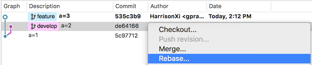
如图所示，我现在身处feature分支，右键点击要合并的位置，选择『Rebase...』。这时候如果没有冲突的话，reabse就会直接完成了。可是喜闻乐见的是我这两个分支肯定是有冲突的，那么我们就去解决对应的冲突。解决完了之后要在SourceTree的主菜单里选择『Actions』->『Continue Rebase』，这时候Rebase就会继续完成。最后我们会得到结果：
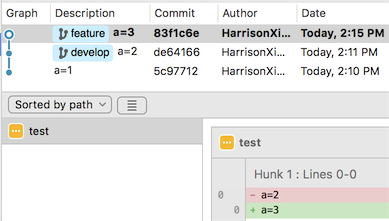
可以看到整个分支结构变了，feature分支的commit对应的hash和提交时间都变了，并没有展示产生过冲突，而且显示的是我把『a=2』改成了『a=3』。
就拿上面我例子里的几个commit举例，我觉得这几个commit太脑残了，就改一个a的值反反复复改了3次，能不能把它们合并成一个commit（在假设只有feature分支的情况下）？
答案是可以的！squash可以拯救你！强迫症有救了！
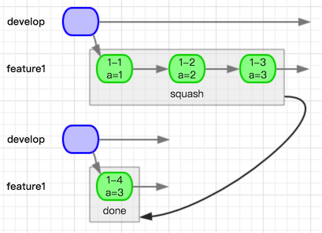
如上图所示意，squash所做的操作就是把3个commit压缩成了一个新的commit。squash的弊端和rebase类似，会丢失很多信息，而大部分时候我们做squash操作也的确是基于rebase操作来进行的。当然merge的时候也可以进行squash操作，一般在并不在乎commit历史的情况下可以使用squash方式进行merge，但是我们是需要保留这些历史信息的，所以不在此多述merge情况下使用squash。
说了这么多，该怎么操作呢？我这就拿一个例子来示范。
以下是我们项目组最新的一个release分支，存在反复修改build号和修改依赖分支的操作：
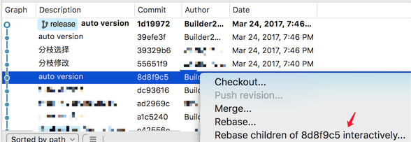
我想要把上面4个commit合并成2个，那么就右键点击第5个commit选择图中所示的『Rebase xxx interactively...』菜单，之后会打开一个新窗口：
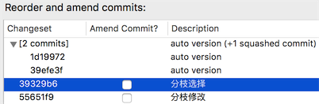
选中最上方的commit 1d19972，然后点击下方的『Squash with previous』按钮就可以把两个commit合并成一个了，如上图所示。继续操作可以把下方两个commit也合并成一个。可以选中对应的commit点击下方的『Edit message』进行commit信息编辑。完成之后点击『OK』就搞定啦：
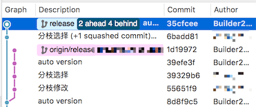
可以看到合并后得到了两个新的commit，但是本地分支已经和远程分支渐行渐远，这种情况下是不建议强制push代码到远程的，所以这里也就是做个操作的示意而已。
画图画了一天，打字打了一天，总算是把本文写完了。本文总结了git工作流可以解决的问题，以及git常见操作优劣势及适用的场景，剩下的就是看大家自己灵活配合使用来解决各种问题了，祝大家好运。
推荐一下ProcessOn，本文中流程图均使用此网站绘制，功能满足各种日常需要，而且因为是国内团队的产品速度也很优秀。